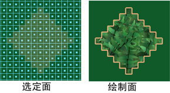

在多边形上绘制时，您可以仅绘制选定面，封锁其余的面并防止对它们进行绘制。也可以使用绘制整体应用您的选择（请参见整体应用选定的多边形面）。

仅绘制选定的多边形面
- 选择要绘制的面。必须已经为曲面指定了纹理。
- 选择“3D 绘制工具”(3D Paint Tool)。选定面周围将显示一个轮廓。
- 选择笔刷并在选定面上绘制。如果使用“Paint Effects”笔刷绘制，必须启用“屏幕投影”(Screen Projection)。
如果笔划延伸到未选定的面，未选定的面将不受影响。
注： 若要更改您的选择，必须退出“3D 绘制工具”(3D Paint Tool)，做出新的选择，然后重新进入该工具。无需重新指定纹理。